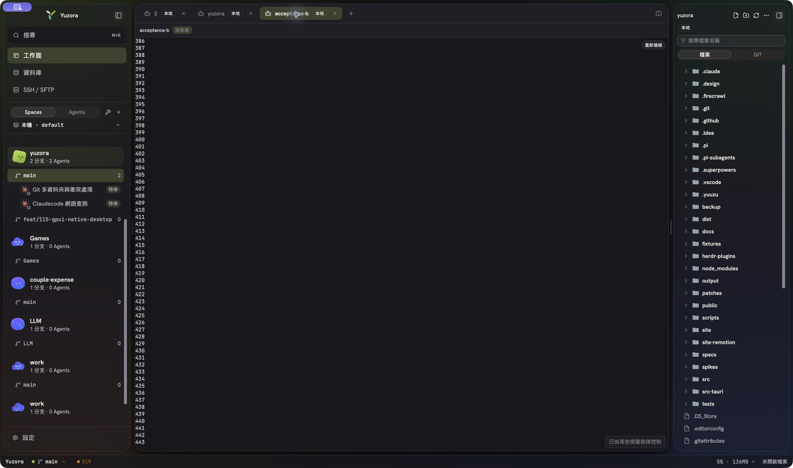
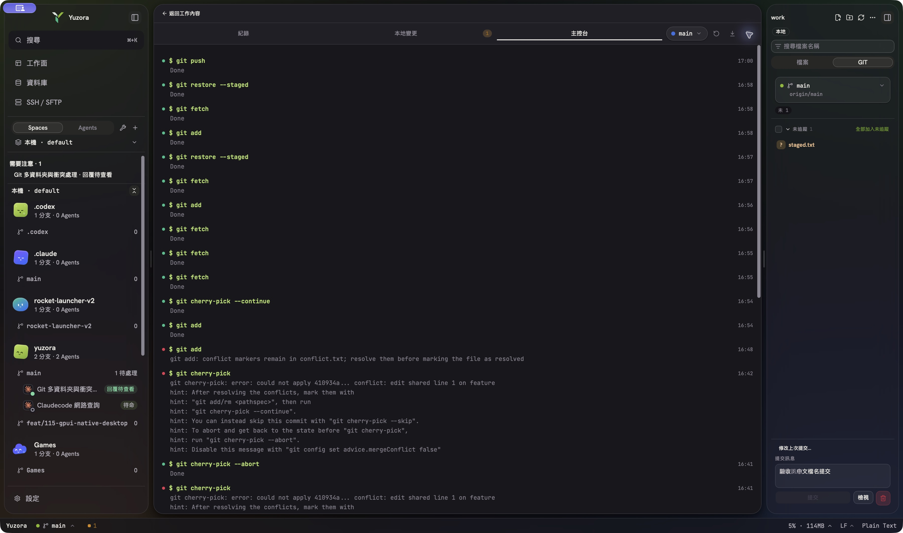
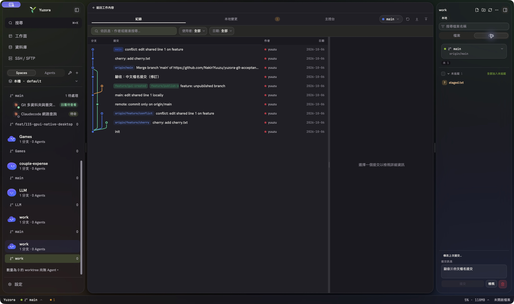
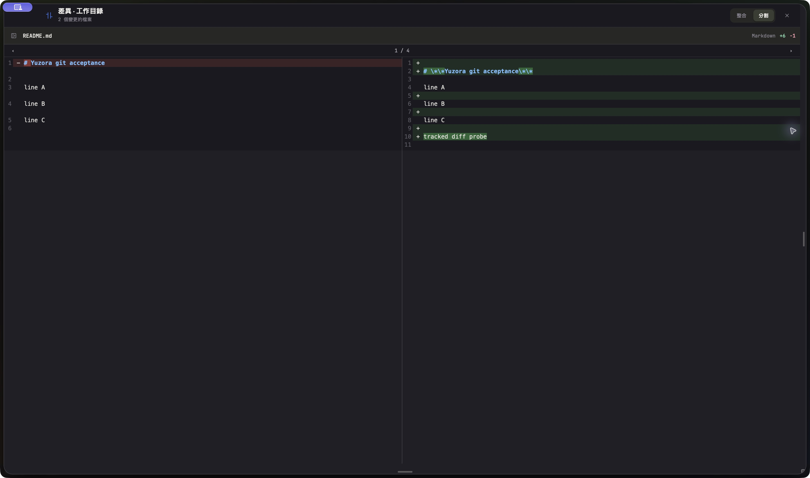
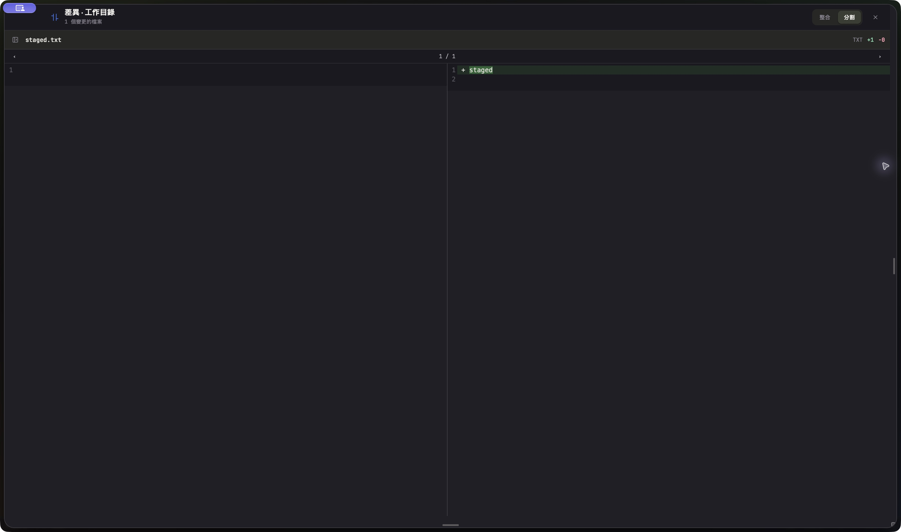

Yuzora Acceptance Bugfix 驗收報告
驗收日期：2026-10-06 核心操作時段：16:28–17:00（UTC+8）
2 / 2B 段自動回歸通過
13 / 13C 段步驟通過
0非預期 FAIL
3預期 git_operation_failed
總表
| 項目 | 結果 | 摘要 |
|---|---|---|
| A. 終端機 IME 標點 | MANUAL | 依驗收指示不切換輸入法、不自動測試；標註「由使用者手動驗收」。本次未變更輸入來源，因此不需恢復。 |
| B1. 畫面內拖曳選取並複製 | PASS | CUA 提供 drag。選取畫面中的 470–480 區段，pbpaste 得到 70, 471…480；首列從字元中段起拖，內容與可見選取一致。 |
| B2. 捲動後拖曳選取並複製 | PASS | 向上捲至約 386–443，選取 400–407 區段，pbpaste 得到 00, 401…407；無捲動後複製錯位。 |
| C. Git 本機 workspace | PASS | 13 個指定步驟均完成；只有刻意觸發的 cherry-pick 衝突與 conflict marker 防呆錯誤。 |
A. 終端機 IME 標點
MANUAL 由使用者手動驗收。
依指示，本輪沒有切換 macOS 輸入法，也沒有嘗試以 CUA 製造 rollover 或 IME composition。
B. 拖曳選取回歸
- 在 Yuzora Acceptance 的 HERDR 終端執行
seq 1 500。 - 使用 CUA
drag在畫面內選取數行並按⌘C。 - 第一次
pbpaste：'70\n471\n472\n473\n474\n475\n476\n477\n478\n479\n480'。 - 向上捲動後再次選取並複製；第二次
pbpaste：'00\n401\n402\n403\n404\n405\n406\n407'。
判定：兩次複製內容均對應畫面中的數字範圍。首列只有後兩碼，是因拖曳起點落在數字第一個字元之後，不是捲動位移錯誤。

seq 1 500 的終端捲動位置（可見 386–443）。該終端後續被其他視窗取得控制，但既有輸出仍可核對。C. Git 驗收逐項結果
| # | 結果 | 實機結果與證據 |
|---|---|---|
| 1 | PASS | 初始面板顯示：已暫存 1（staged.txt）、未暫存 1（README.md）、未追蹤 2（untracked.txt、資料 夾/中文 檔案.txt）。中文與空白路徑完整顯示。 |
| 2 | PASS | Stage untracked.txt 與中文檔；Unstage staged.txt；Discard README.md 並確認「回復所選變更」。 |
| 3 | PASS | 提交訊息 驗收：中文檔名提交；啟用 Amend 後改為 驗收：中文檔名提交（修訂）。最終 commit 844ae5e。 |
| 4 | PASS | Fetch 後分支顯示 ↑2 ↓1。 |
| 5 | PASS | Pull 成功產生 merge commit 87e4c0f，remote.txt 出現；Console 明確顯示 $ git pull，沒有 --rebase，也沒有 divergent branches。 |
| 6 | PASS | main Push 顯示 Done。 |
| 7 | PASS | 切到 feature/publish-me（原本「沒有上游」）後 Push 成功；唯讀核對 rev-parse --abbrev-ref @{u} 為 origin/feature/publish-me。 |
| 8 | PASS | 由 UI 建立 feature/gui-created，再切回 main。 |
| 9 | PASS | 從 Log 揀選 cherry: add cherry.txt 成功，main 新增 commit fb438ca。 |
| 10 | PASS | 第一次衝突後 Abort 成功；第二次先驗證 conflict marker 防呆，再用編輯器「Accept both」保留雙方內容與共同第二行，儲存、標記已解決、Continue 成功。main 新增 commit ba1df28。 |
| 11 | PASS | 連續 Fetch、Stage、Unstage 並切換 Log／本地變更分頁。Console 在 16:56–16:58 顯示 git fetch、git add、git restore --staged 全部 Done；沒有 git-jobs-busy。 |
| 12 | PASS | 先確認未追蹤 staged.txt Diff；再建立暫時 tracked README.md 修改並開啟 Diff，確認可顯示。截圖後已透過 Git UI 回復探針修改。 |
| 13 | PASS | 最終 Push main 顯示 Done。唯讀核對 HEAD == origin/main == ba1df287…。 |

git push 為 Done；同畫面保留 Fetch／Stage／Unstage、Continue，以及預期錯誤紀錄。


staged.txt 的新增檔 Diff，右側正確顯示 + staged。預期錯誤原文
以下錯誤是驗收步驟刻意觸發，判定為防呆／衝突流程正常，不列為 FAIL。
Cherry-pick 衝突（出現兩次）
git cherry-pick: error: could not apply 410934a... conflict: edit shared line 1 on feature hint: After resolving the conflicts, mark them with hint: "git add/rm <pathspec>", then run hint: "git cherry-pick --continue". hint: You can instead skip this commit with "git cherry-pick --skip". hint: To abort and get back to the state before "git cherry-pick", hint: run "git cherry-pick --abort". hint: Disable this message with "git config set advice.mergeConflict false"
衝突標記仍存在時拒絕標記已解決
git add: conflict markers remain in conflict.txt; resolve them before marking the file as resolved
git_operation_failed 日誌核對
檔案：~/.yuzora/logs/yuzora-2026-10-06.jsonl
範圍：2026-10-06T08:28:24Z 起（即 16:28:24 UTC+8）。本次 workspace 為 /private/tmp/yz-git-gh/work，run ID 為 20261006T082650Z-83ae0343。
共 3 筆，全部對應預期驗收錯誤：
08:41:24.809854Z—op=cherry-pick— 第一次衝突，後續 Abort。08:42:14.813269Z—op=cherry-pick— 第二次衝突，後續解決並 Continue。08:48:25.962601Z—op=stage— conflict marker 防呆拒絕。
沒有 git-jobs-busy 事件，也沒有非預期 Git 失敗。
最終 Git 狀態
## main...origin/main ?? staged.txt HEAD: ba1df287bdbc2f5a1f2ea5a36b348492574d8f0f origin/main: ba1df287bdbc2f5a1f2ea5a36b348492574d8f0f feature/publish-me upstream: origin/feature/publish-me CHERRY_PICK_HEAD: 不存在
staged.txt 保持未追蹤，符合第 2 項「Unstage staged.txt」後的預期；衝突流程已完全結束。
FAIL 精確重現步驟
無 FAIL 本輪沒有非預期產品錯誤，因此沒有 FAIL 重現步驟。
codex_app／CUA 限制與替代方式
- CUA 不支援按住滑鼠越界自動捲動；該項仍由使用者手動驗收。本輪只做畫面內拖曳。
- CUA 無法可靠產生 macOS IME composition／rollover，因此 A 段遵照指示不測。
- 原生
screencapture -l 9704回報could not create image from window；screencapture -R…回報could not create image from rect。這是執行 shell 缺少 Screen Recording 能力；codex_app 的 native CUA 仍可正常擷取目標 App。 - 替代留證流程：由 CUA 取得只含 Yuzora Acceptance 的 JPEG buffer，透過 Acceptance 內的拋棄式終端分成 24,000 字元 base64 區塊寫入資產，再解碼成 JPEG。沒有擷取其他 App 內容。
- 一次貼入約 728k base64 會觸發 HERDR「輸入已暫停」；確認沒有產生檔案後，改用新終端分段傳送。這是驗收自動化／證據搬運限制，不是本次三個產品 bug 的 FAIL。
- 拖曳座標以 Retina 原始像素計算；第一次誤落在左側 Agents 分頁後立即依新截圖校正，未影響受測資料。
結論
C 段 Git 修正全部通過。 Pull 使用 git pull 正常合併分岔、無 upstream Push 正確建立 upstream、衝突標記防呆與完整錯誤訊息正常、Fetch 壓力下的讀寫操作沒有 git-jobs-busy。B 段可自動化的畫面內拖曳與捲動後複製均通過。A 段保留給使用者手動驗收。